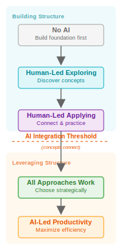

Human+AI Collaboration Roles
A thinking tool, not rules: This framework helps you decide how to collaborate with AI based on your learning goals and level of domain competence. You maintain control over goals and decisions. The framework makes suggestions, but you choose based on your context, constraints, and values.
Prerequisites: This model assumes ethical, legal, equity, environmental, cheating etc. concerns have been considered and appropriate tools selected.
Suggested Progression
Collaboration Roles: Two Modes
Diagnostic (Reflecting)
"Which approach am I currently using? Does it align with my learning goals?"
Prescriptive (Planning)
"Given my objectives and constraints, which approach should I adopt?"
DPVR: Core AI Collaboration Skills
Delegate
Identify tasks AI can handle independently
Probe
Test AI understanding through targeted questions
Verify
Check AI outputs for accuracy and completeness
Repair
Fix errors and guide AI back on track
4 Levels of AI Abstraction
Understanding AI at different levels:
Probing & Perspective-Taking (level 3)
Why Probe? Testing AI's understanding helps you calibrate your collaboration approach.
Perspective-Taking: Understanding what AI "knows" requires cognitive empathy—imagining how it processes information differently from humans.
All DPVR skills require perspective-taking to be effective.
SOLO Taxonomy & Collaboration Readiness

The Integration Threshold: Critical transition where concepts connect and AI outputs become evaluable
Before the Threshold: Students need human-led guidance to build understanding structure. AI can't help if they don't know what to verify.
After the Threshold: All quadrants viable—choose based on learning goals rather than limitations. Students can leverage AI to extend understanding.
References & Further Reading
- Biggs, J. B. & Collis, K. F. Evaluating the quality of learning: The SOLO taxonomy (Structure of the Observed Learning Outcome). New York, Academic Press, 1982.
- ... WIP